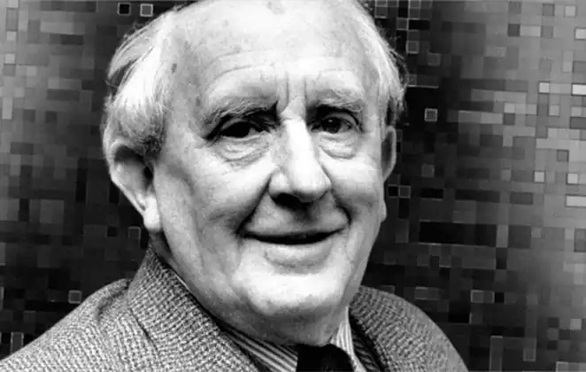

ТОЛКІЄН (Толкін), Джон Роналд Руел (Tolkien, John Ronald Reuel — 3.01.1892, Блумфонтейн — 2.09.1973, Борнмут) — англійський письменник.Толкієн народився в столиці південноафриканської Оранжевої республіки в родині керуючого банком.. У 1895 р. мати забрала Толкієна і його молодшого брата в Англію. Після смерті батька (1896) сім'я оселилася у передмісті Бірмінгема. Першим педагогом Толкієна стала його мати, котра навчала дітей латинської та французької мов, малювання і музики. З дитинства у Толкієна виявився великий інтерес до вивчення мов і читання чарівних казок, він захоплювався легендами американських індіанців та піснями "Старшої Едди". У семирічному віці Толкієн склав свою першу казку про дракона. У 1900 р. він вступив на навчання до граматичної школи, відтак сім'я переїхала у Бірмінгем. У школі Толкієн завзято вивчав мови: грецьку, німецьку, давньоанглійську, давньонімецьку, готську, ісландську. Йому подобалася історія мов і порівняльна філологія, він намагався створювати нові мови. У 1904 р. після смерті матері опікуном Толкієна і його брата став її духівник Френсіс Морґан, коштом якого хлопці закінчили школу. У 1911 p. Толкієн вступив на факультет англійської мови та літератури Оксфордського університету. В Оксфорді він відкрив для себе фінський епос, вивчив давньофінську мову, щоби читати "Калевалу" в оригіналі. Згодом на основі давньофінської мови Толкієн створив альфійську мову, якою говоритимуть його герої.
Коли почалася Перша світова війна, Т. навчався на останньому курсі університету. Склав-ши ісггити, він добровольцем вступив у діючу армію і став молодшим лейтенантом зв'язку у батальйоні Ланкаширських стрільців. На війні йому судилося пережити загибель друзів, він був учасником кривавої битви біля Сомми, перехворів окопним тифом.
Після закінчення війни Толкієна запросили взяти участь в укладанні Великого словника англійської мови в Оксфорді. Це було серйозним визнанням його філологічних здобутків. У 1920 р. Толкієн став викладачем, а невдовзі — професором англійської мови у Лідському університеті. У Лідсі Толкієн познайомився з канадським філологом-медієвістом Гордоном. Разом вони переклали сучасною англійською мовою рицарський роман "Сер Гавейн і Зелений Рицар" ("Sir Gawain and the Green Knight"). Переклад побачив світ у 1925 p. Того ж року Толкієн з родиною повернувся в Оксфорд, де став професором англосаксонської мови. Відчуваючи брак коштів, він часто змушений був шукати приробітку, щоб утримувати сім'ю (мав троє синів, пізніше народилася донька Присцілла), а ночами складав свої чарівні історії про ельфів, Середземелля, королівство Валінор. Першим опублікованим твором Толкієна стала повість "Гоббіт, або Туди і назад" ("The Hobbit, or There and Back Again", 1937). Книжка мала такий приголомшливий успіх, що Т. навіть побоювався, аби слава автора дитячого бестселера не зашкодила його репутації професора-філолога. Піддавшись на умовляння видавців написати ще кілька книг про гоббітів, Толкієн розпочав роботу над створенням "Володаря Перснів" ("The Lord of the Rings"). Проте праця над текстом просувалася повільно і розтяглася на 17 років. "Володар Перснів" був остаточно завершений у 1954 р. Через дорожнечу паперу було неможливо опублікувати цей чималий твір одним томом, і видавництво " Аллен та Анвін" з дозволу автора розділили текст на три томи, назву яким дав Анвін-молодший. Незважаючи на те, що "Володар Перснів" створювався як цілісний твір, у всіх наступних виданнях він складався з трьох томів: "Братство Перснів" ("The Fellowship of the Ring"), "Дві фортеці" ("The Two Towers"), "Повернення короля" ("The Return of the King"). Перші два томи побачили світ у 1954 p., а третій — у 1955 р. Успіх "Володаря Перснів" був неймовірним. Книга здобула популярність не лише в Англії, а й далеко за її межами, була перекладена багатьма мовами. Проте слава обтяжувала Толкієна. Аллен й Анвін намагалися тримати в таємниці адресу і телефон письменника, але телефонні дзвінки тривожили його навіть серед ночі, оскільки шанувальники його таланту з усіх куточків світу забували про різницю часових поясів. Толкієн знайшов притулок у невеличкому курортному містечку Борнмуті, куди він вирушив разом з дружиною Едіт Бретт у 1968 р. Після смерті Едіт Толкієн у 1972 р. повернувся в Оксфорд. Коледж Мертона, де Толкієн працював протягом останніх років своєї викладацької діяльності, надав йому житло, 80-річним письменником опікувалася пара слуг. У 1972 p. Толкієн став кавалером ордена Британської імперії II ступеня. У серпні 1973 р. під час відвідин Борнмута Толкієну стало зле. Він помер 2 вересня і був похований поряд з дружиною на цвинтарі поблизу Оксфорда. На їхніх надгробках вирізьблені імена легендарних героїв казкової епопеї Толкієна — "Берен" і "Лучіень". Толкієн увійшов у літературу як автор чарівних казок, "Гоббіта" й "Володаря Перснів". Після смерті письменника залишилися незавершеними чимало рукописів, які згодом видав його син Крістофер: "Сільмариліон" ("The Silmarillion", 1977) — історія двох каменів сільмарилів, викрадених з королівства Валінор; "Книга втрачених сказань" ("The Book of Lost Tales", 1983-1984, перший варіант "Сільмариліону"); переклад су-часною англійською мовою середньовічних романів "Перлина" ("The Pearl") і "Сер Орфео" ("Sir Orfeo"), опублікований у 1975 р. Літературну славу Толкієну принесла повість "Гоббіт, або Туди й назад". Сюжетною основою твору є історія подорожі гоббіта Більбо Беґґінса і тринадцяти гномів до Гори — лігва дракона Смога — для того, щоби відвоювати у Смога скарби, які той колись відібрав у гномів. Надійним помічником Більбо та його друзів стає чарівник Гендальф, який завжди опиняється поруч у мить найбільшої небезпеки. Поряд із традиційними персонажами англійського фольклору (дракони, гноми, ельфи, тролі) у повісті з'явилися образи, створені фантазією автора: гоббіти — коротуни з порослими хутром ногами, які живуть у норах; огидний Горлум — "велика слизька тварюка". На боці добрих і злих сил опиняються навіть тварини: орли є друзями Гендальфа, а лютим гоблінам допомагають дикі вовки варти. Більбо та його друзі долають силу-силенну небезпечних перешкод на своєму шляху, але "Гоббіт" за традицією чарівної казки закінчується перемогою добра над злом: перетворюються на камінних бовванів злі тролі, зазнають поразки гобліни, гине Смог, уражений стрілою воїна Берда. У "Гоббіті" Толкієн вирішує проблему героїзму. У роки Першої світової війни письменник пересвідчився в тому, що героїчні подвиги вершать звичайні люди, рядові солдати, віддані своєму обов'язку. Про них згадував Толкієн, створюючи образ Більбо. Приземкуватий любитель добре попоїсти, Більбо з його "повненьким черевцем" зовсім не схожий на героя. Але з плином розвитку сюжету відбувається становлення іншого Більбо — героя, який виявляє дивовижні мужність, самовідданість і безкорисливість, коли, рятуючи своїх друзів, б'ється з велетенськими павуками, вирушає на зустріч зі Смогом або жертвує свою частку скарбів на користь мешканців міста Есгарота, які постраждали від дракона. Образ Більбо утверджує ідею великого в малому, героїчної основи у скромній, звичайній особистості. У "Гоббіті" виявився і філологічний талант автора. Текст повісті насичений каламбурами, загадками, що спонукають читача до активного сприйняття мови, усвідомлення двоїстого значення слова. У "Гоббіті" трапляються прислів'я, згадуються рунічні письмена, "місячні літери" ельфів, рукописні карти; ці елементи покликані створити ілюзію минулого, відчуття того, що відбувається, як одного з епізодів історії. У 1939 p. Толкієна попросили прочитати лекцію про Е. Ленґа, фольклориста XIX ст., автора збірників казок для дітей. Лекція "Про чарівні істо-рії" ("On Fairy Stories"), яку пізніше Толкієн опублікував у своїй книзі "Дерево і листок" ("Tree and Leaf", 1964), стала маніфестом художніх принципів письменника. Він виступає проти поширеної думки про те, що казки є суто дитячим читанням, доводячи, що дорослі повинні сприймати казку як природну павіть літератури. Образи чарівної казки не пов'язані з реальністю, і саме в цьому Толкієн вбачає її позитивне значення. Іншою особливістю казки є віддаленість у часі, завдяки якій читач опиняється поза своєю епохою, а, ймовірно, й поза часом взагалі. Казка дає простір для польоту фантазії, її царина — Вторинний світ, куди можуть потрапити і творець, і читач. Чарівні казки, на думку Толкієна, допомагають відновити душевну рівновагу, відсвіжити і загострити ясне бачення світу: у них читач знаходить спосіб втечі від дійсності. Казка дарує людям радість щасливого фіналу, вона відкидає ймовірність цілковитої й остаточної поразки людини. Принципи чарівної казки Толкієн реалізував у книзі "Володар Перснів"(1954-1955). Напередодні Другої світової війни і під час неї письменник переймався роздумами над долею людства, проблемами природи зла, тиранії, влади. Його книга, спершу задумана як продовження "Гоббіта" — повісті для дітей, ставала дедалі серйознішою, "дорослішою". Це позначилося і на загальному тоні розповіді. На зміну авторській іронії, м'якому гумору "Гоббіта" прийшов схвильовано-патетичний стиль "Володаря Перснів". Як і в "Гоббіті", герої нової книги вирушають у небезпечну подорож, але цього разу мета експедиції є набагато важливішою. У "Володарі Перснів" небіж Більбо Фродо повинен добратися до Мордора, щоб кинути у Вогненну Прірву Перстень-невидимку, колись викрадений його дядьком Більбо у бридкого Горлума. Від результату подорожі Фродо залежить доля Середземелля: якщо Перстень здобуде володар Мордора Саурон, то на землі запанує зло. Таким чином, Фродо, спочатку так само нічим не примітний гоббіт, як і Більбо, стає епічним героєм, відповідальним за долю цілих народів. З цією лінією переплітається історія сходження на престол Арагорна, спадкоємця трону Гондора. З'явившись у книзі в образі мандрівця Колоброда, Арагорн набуває рис доблесного воїна, мудреця, вправного знахаря. Арагорн уособлює традиційне уявлення про героя епосу, натомість Фродо і його слуга та друг Сем продовжують тему героїзму маленької людини, яку Т. почав ще в "Гоббіті". Фантазія письменника невичерпна.